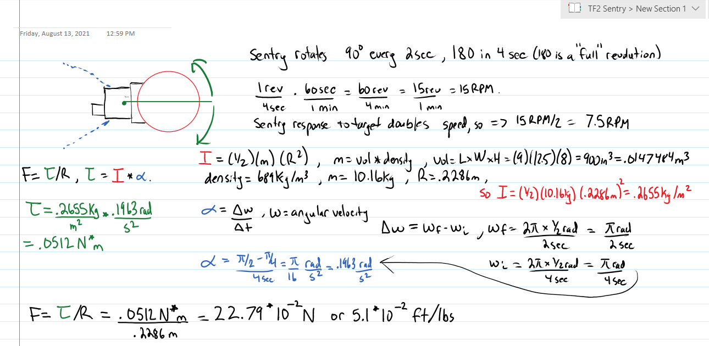

TF2 Sentry - Page Work in Progress
Motor System
The motor system has two main components, the motor itself and the motor controller. It will be controlled via the STM32F7.
Motor - Force, Torque, Inertia and RPM Calculation.
So I thought to myself oh boy, this will be something, as I knew I had to get some physics involved which I remember as one of my first classes, I did not like, but I thought I should be able to handle it now. I've graduated and have a far better understanding of things now, and ability to. I decided to open my old physics books for some assistance.
So the top of the sentry gun that rotates is obviously a unique shape. For simplicity, I modeled it as a circle on paper that is being rotated at it's center. Now, I need to find the force required to rotate the sentry which can support the speed and weight. I (at the time) thought the load to be 1lb (though now it's around 1.7lbs). I need to figure out the force required to move the sentry, which naturally I need to find the torque, inertia, and a few other things. Below is a summary of the calculations I went through.

Motor - Motor Type
So now I moved onto a stepper motor. I can get a controller that enables different types of stepping to make the rotation smooth, and changing the step frequency adjusts the RPM. I can do this all via the STM32F7.
Motor Chosen - Nema 11 Stepper